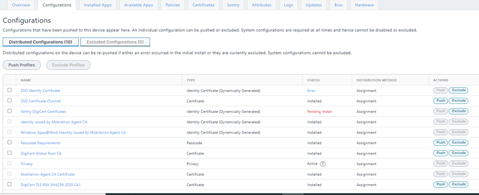
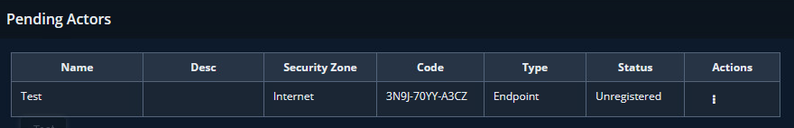

Enterprise 1 Build 1 (E1B1) - EIG Crawl - Okta Identity Cloud and Ivanti Access ZSO as PEs Product Guides#
Note
This page is supplementary material for the NIST SP 1800-35 publication.
This section of the practice guide contains detailed instructions for installing, configuring, and integrating all of the products used to implement E1B1. For additional details on E1B1’s logical and physical architectures, please refer to Architecture and Builds.
Okta Identity Cloud#
The Okta Identity Cloud is a SaaS solution that provides ICAM capabilities to an enterprise. The following sections describe the setup of the Okta Identity Cloud, the Okta Access Gateway, and the Okta Verify application. Okta integrates with Radiant Logic for identity information, SailPoint to receive governance information, and Ivanti to delegate authentication for users accessing resources using mobile devices.
Configuration and Integration#
The purpose of this subsection is to set up NCCoE’s own instance of the Okta cloud so it can integrate with other ICAM tools and enable Okta to manage authentication and authorization of users accessing resources. Most configurations are completed within this instance of the Okta cloud.
Sign up for an account with Okta (okta.com) and follow steps to set up an admin account, along with configuring Okta Verify for the admin account. This will allow the admin to start configuring integrations and services.
Set up directory integration with Radiant Logic. User identity information is pulled from Radiant Logic into Okta for authentication and authorization. An Okta Lightweight Directory Access Protocol (LDAP) agent is installed on the Radiant Logic server for integration. Note: This step should be completed after Radiant Logic is configured.
Create Groups for Okta to apply a specific set of users to specific services or applications. This allows for automation of user governance at a large scale rather than manual configuration of individual users.
Create application programming interface (API) tokens to be used by SailPoint and Radiant Logic for communication. These tokens will allow Okta to give specific read/write privileges to other applications.
Create a delegated authentication for Okta to be able to import users from Radiant Logic via LDAP. This allows Okta to delegate the actual authentication to Radiant Logic. Okta does not store or know the password of the user. Note that a service account, created in the Radiant Logic Integration, needs to be created and used in this configuration.
Create application integration via Security Assertion Markup Language (SAML). We have Ivanti Neurons for UEM and 2 GitLab instances in Enterprise 1. Okta Access Gateway (AG) needs to be installed in order to configure on-premises applications. The Okta AG gives the Okta Identity Cloud visibility to the resources inside the enterprise. See Okta Access Gateway for installation instructions, which include information on configuring on-premises applications.
Create Identity Provider integration for Ivanti Access ZSO. This will allow delegated authentication for Ivanti for mobile devices. This involves creating a custom application using SAML and then creating a SAML Identity Provider.
Configure Device Trust on iOS and Android devices to create device integrations.
Create authentication policies. These policies define how users will authenticate. By default, a “Catch All” policy is created when an application is created. We are creating an authentication policy that will allow Okta to trust Ivanti Access ZSO to be the delegated Identity Provider (IdP). To do this, when Okta checks that Okta Verify is a managed application on a device, it will delegate authentication to Ivanti Access ZSO.
Okta Verify App#
The Okta Verify app is installed, usually on a mobile device, when a new user is onboarded. It serves as a tool to provide a second factor for authentication. The user can log in to the Okta Identity Cloud for the first time. For this setup, the user will be asked to change their password and perform setup. After the password update, the user can set up Okta Verify. Follow the instructions for Android or iOS devices to install Okta Verify and complete the process.
Okta Access Gateway#
The Okta Access Gateway (AG) is part of the Okta Identity Cloud. It can be leveraged to integrate legacy, on-prem applications into the Okta Identity Cloud. Since the Okta Identity Cloud cannot communicate with Enterprise 1 resources directly, the Okta AG acts as a proxy to facilitate that communication. More information on installing and configuring the Okta AG is available online.
Radiant Logic RadiantOne#
Radiant Logic RadiantOne is an ICAM solution that unifies identity data, making access reusable and scalable for the enterprise.
Installation#
RadiantOne is to be installed on a Microsoft Windows 2019 server. See the RadiantOne v7.4.1 documentation from the Radiant Logic website for system specifications. Prerequisites are in Chapter 1 of the RadiantOne Installation Guide. Note: You need to create an account within the Radiant Logic website in order to access the installation and configuration documentation.
Once you download and launch the executable for a Windows server installation, follow the step-by-step instructions provided on the screen. We used default settings unless specified below. Instructions can also be found in Chapter 2 of the RadiantOne Installation Guide.
Choose RadiantOne Federated Identity Suite New Cluster/Standalone for the Install Set.
Provide a name and password for the Cluster settings.
For the Server Configuration step, use the following ports: LDAP = 389, LDAPS = 636, and Scheduler Port = 1099.
Configuration#
Sync with an LDAP server#
Once installation is complete, log in to RadiantOne from a web browser on the Radiant Logic server, https://localhost:7171. Note: ensure the proper SSL certificate is on the server for HTTPS.
Initial configuration is to sync up with an LDAP server. Go to Settings > Server Backend > LDAP Data Sources. The screenshot below shows the information created for Enterprise 1 AD. See the RadiantOne Namespace Configuration Guide Chapter 3 for details.
Once the connection is tested and successful, the integration is completed.
Next, create a Directory Namespace by going to Directory Namespace and selecting Create New Naming Context. Click Next and click OK.
Find DC=NCCOE,DC=ORG under Root Naming Contexts on the left side of the screen. Click the New Level button. Enter ent1 as the name for the OU and click OK.
Click on ou=ent1 on the left side and click the New Level button on the right to create a sub-ou called groups.
Click on ou=ent1 on the left side and click the New Level button on the right to create a sub-ou called users.
Once configured and saved, click on ou=users and click on Backend Mapping on the right. Select LDAP Backend. Click Next and Browse for the proper Remote Base DN. Then click OK. The screenshot is the completed configuration for the sub-ou users Proxy Backend.
Go to Objects and create a primary object and Join Profile by clicking Add on each object. Click Save. Now we have data sources from LDAP and our database.
Create a namespace to bring in users#
In Directory Namespace, click the + sign. Create a naming context: ou=hr,ou=lab,ou=nccoe,ou=org and select Virtual Tree for the naming context type, then click Next.
Configure the Virtual Tree by choosing Create a new view (.dvx), setting the Directory View to dv=ou_hr_ou_lab_ou_nccoe_ou_org and clicking OK.
Next, create a sub-Namespace by clicking the + New level button and entering the information depicted below.
Click on the sub-Namespace that was just created and click on Backend Mapping. Specify ou=east,ou=hr,ou=lab,ou=nccoe,ou=org as the naming context and select HDAP Store as the type, then click Next. Note: Instead of having an actual HR database, we are importing sample users from a text file.
Click on ou=east to edit properties. Scroll down to the bottom of the screen and click on the Initialize button. Then select a file with database users to import for initializing the High-Availability Directory Access Protocol (HDAP) store. Note: We are emulating an HR database with this file.
Go to the Directory Browser tab and refresh the data by clicking the Refresh Tree button.
Go to the OU that you just configured and expand it. The new users should now be available.
Go to Directory Namespace and click the + button to add new naming context (in our build, we used ou=testing). This is used to map to the LDAP backend the database information that was imported.
Click on the OU that was created. Click OK and Save.
Go to Directory Browser and hit the Refresh button.
Go to Settings > Configuration > ORX Schema, and find OU=Testing and check it. Click on Generate LDAP Schema at the bottom of the screen and click OK.
Integration#
Other applications, including SailPoint and Okta, will need the following information in order to integrate with Radiant Logic and pull information from it:
Hostname: radiant1.lab.nccoe.org (hostname of the Radiant Logic server)
Port: 389 (LDAP) and 636 (LDAPS)
Also, a service account and password need to be created on Radiant Logic for each application to be integrated. The service account is in the form of: uid=sailpointadmin,ou=globalusers,cn=config. Follow these steps to create each service account for SailPoint, Okta, and any other desired applications:
Go to Directory Browser.
On the left, go to cn=config, then ou=globalusers underneath it. Right-click on ou=globalusers, click Add, then click New InetOrgPerson.
Fill in the necessary entries. Click Confirm to save the configuration.
SailPoint IdentityIQ#
SailPoint IdentityIQ is the identity and access management software platform for governing the lifecycle of the enterprise user’s identity.
Installation and Configuration#
The steps below explain the installation of the IdentityIQ server, initial configuration to import users from the Radiant Logic identity store, and configuration to manage the lifecycle of users.
To install IdentityIQ, first identify the platform and prerequisites. For this build, we used Windows 2019 with Apache Tomcat 9.0 and MS SQL Server 2019 as recommended requirements for release 8.2. Download the installation file from the SailPoint website and follow the installation instructions.
Login into IdentityIQ from a web browser (http://localhost:8080) using the default login and password identified in the IdentityIQ Installation Guide. Make sure to change the default password by following the instructions provided in the Guide.
Configure IQService. This is needed in order to set up integration with AD.
Govern permissions by pushing employee and contractor users and groups to AD and Okta. Note: This step should be completed after the integration with AD and Okta is completed. Steps to configure integration are in Integration with AD and Integration with Radiant Logic. After integration with AD and Okta is completed, navigate to the Setup drop-down menu and select Roles. Here we will create a birthright role and access profile for employees and contractors.
Select the New Role drop-down button and select Role. The screenshot lists the four roles that are created for this build.
For the Employee Birthright Role, use the configuration shown in the next two screenshots. Note that the Assignment Rule is where the value of employee is used to identify the users. This will push users into AD as a birthright. Once that role is configured, configure the corresponding contractor role the same way. Note that the Assignment Rule should be different for the contractor based on user information in SailPoint.
For the Employee Access Profile role, add the groups that the employees belong to. This means that these users will have access to these groups as a birthright. Perform the same for the corresponding contractor role. Note that the Entitlements should be different for the contractor based on group information in Okta and AD.
The next step is to synchronize users and groups. To begin, navigate to the Setup tab and select Tasks.
To create user aggregation, select the New Task drop down button and select Account Aggregation. The screenshot below depicts the aggregation configuration for Radiant Logic. This allows SailPoint to sync with Radiant Logic on any updates made to users. Repeat this step for AD and Okta accounts. Note that the Account Aggregation Options section is where the AD and Okta applications need to be selected to create the proper account aggregation.
To create group aggregation, select the New Task drop down button and select Account Aggregation. This allows SailPoint to sync with AD on any updates made to users in the groups. Repeat this step for the Okta account. Note that the Account Group Aggregation Options section is where the Okta applications need to be selected to create the proper account aggregation.
Configure lifecycle processes through Rapid Setup Configuration. Click on the Setup cog and select Rapid Setup to begin. The Rapid Setup Configuration process allows onboarding of applications and manage functions such as joiner, mover, and leaver of identities. Use the “Using Rapid Setup” section of the IdentityIQ Rapid Setup Guide to guide the configuration.
Configure Joiner, Mover, and Leaver.
Configure Identity Operations.
Configure Rapid Setup specific to AD users: Aggregation, Joiner, Mover, and Leaver.
Govern user permissions to applications on an individual basis. Configure procedures to provision and approve user access to resources. For Enterprise 1, the process is for an administrator or user to request approval to access an application. That request goes to the user’s manager for review and approval. Once the manager approves the request, SailPoint kicks off an API call to Okta to configure access for that user.
Integration with Radiant Logic#
In the Applications tab, select Application Definition. When the screen comes up, click on the Add New Application button.
Enter values for the Name (e.g., “Ent1-HR”) and Owner (e.g., “The Administrator”) fields. Select LDAP as the Application Type and ensure that Authoritative Application is enabled.
Click on the Configuration tab next to the current tab. The credentials that were created in Radiant Logic will need to be added.
Scroll down the screen and under the Account tab, add the Search DN, which is the one created from Radiant Logic.
Click on Test Connection to make sure that SailPoint is able to connect to Radiant Logic. Click Save.
You can go back into the Configuration tab and Schema sub-tab. Toward the bottom of the screen, there is a Preview button. You can click on that to preview the imported attributes. Note: We manually added schema attributes. This can be completed from Radiant Logic and imported. Please ensure that you have the correct attributes to integrate this.
To complete the setup, click Save to finish and import users from Radiant Logic.
Go to the Setup tab and click Tasks. Once in the new tab, click on the New Task button at the top right corner to create the account aggregation for Radiant Logic.
Perform identity attribute mapping. The screenshot shows mappings specific to this build only.

Integration with AD#
Navigate to the Applications tab, click on Application Definition, then click the Add New Application button. Fill out the Name (e.g., “Ent1-AD-Ent-Users”), Owner (e.g., “The Administrator”), and Application Type (“Active Directory - Direct”).
Navigate to the Configuration tab. From here, input information for the IQ Service Host. The IP address is this server, the IdentityIQ server. IQ Service User is a user that was created in AD for this integration.
Scroll down to the Domain Configuration section. Input the domain information for where the users will be provisioned.
Scroll down to the User Search Scope section and input the Search DN information. This should be the AD domain location for your enterprise.
Navigate to the Schema and Provisioning Policies sub-tabs, and update information as necessary.
Then navigate to the Correlation tab to configure the correlation for application and identity attributes between SailPoint and AD.
Click Save to complete the configuration.
Go to Setup tab and click Tasks. Once in the new tab, click on the New Task button at the top right corner to create the account aggregation for AD.
Integration with Okta#
Go into the Applications tab and select Application Definition. When the screen comes up, click on the Add New Application button.
Fill out the Name (e.g., “Ent1-Okta”) and Owner (“The Administrator”), select Okta as the Application Type, and enable the Authoritative Application option.
In the Configuration settings tab, the Okta URL and API token are needed. Note that the API token is created in Okta. Click Save to finish the setup.
Ivanti Neurons for UEM#
Ivanti Neurons for UEM is a unified endpoint management (UEM) solution which is used to provision endpoints, grant access to enterprise resources, protect data, distribute applications, and enforce measures as required.
Installation and Configuration#
Install an MDM certificate for Apple devices#
The Apple Push Notification service (APNs) certificate needs to be installed in Ivanti Neurons for UEM to communicate with Apple devices. Apple devices use an APNs certificate to learn about updates, MDM policies, and incoming messages.
To acquire and install the MDM certificate:
Open the Ivanti Neurons for UEM console and go to Admin > Apple > MDM Certificate page to download a certificate signing request (CSR).
Upload the CSR to the Apple Push Certificates Portal to create a new certificate.
Save the resulting certificate.
Install the certificate for the Ivanti Neurons for UEM tenant.
Configure Android Enterprise#
Android Enterprise allows personal and corporate applications on the same Android device. Android Enterprise configuration depends on the type of Google subscription. Please follow Ivanti documentation to set up the integration.
The Android Enterprise Work Profile configuration defines which features and apps are allowed, and which are restricted on Android enterprise devices. Do the following to configure the profile:
In the Cloud portal, go to Configurations and click Add.
Select the Lockdown & Kiosk: Android Enterprise configuration.
Enter a configuration name and description.
Click the Work Profile lockdown type.
Select the lockdown settings for Android devices.
Add a certificate authority#
A certificate authority (CA) generates self-signed certificates to be used by the devices that Ivanti Neurons for UEM manages. For this implementation we used an external certificate authority (DigiCert) and a Connector to access it. Ivanti Cloud Connector provides access from the Ivanti Neurons for UEM service to corporate resources, such as an LDAP server or CA.
Install and configure a Connector (Admin > Connector).
In the Certificate Management page, click Add under the Certificate Authority section.
Choose Connect to a publicly-trusted Cloud Certificate Authority.
Enter a name for the CA.
Download the certificate from DigiCert and upload it to Ivanti Neurons for UEM.

Configure user settings#
User settings define device registration options. Access them by opening Ivanti Neurons for UEM and going to Users > User Settings. Configure device and password settings there.
Add a policy#
Policies define requirements for devices and compliance actions (what happens if the rule is violated). To add a policy:
Go to Policies and click +Add (upper right).
Select a policy type and complete the settings. Policy types include Compromised Devices, Data Protection/Encryption Disabled, MDM/Device Administration Disabled, Out of Contact, and Allowed Apps.
Select the device groups that will receive this policy.
The following screenshots show an example of a Data Protection policy to be distributed to a custom group of devices.
Add a configuration for managed devices#
Configurations are collections of settings that Ivanti Neurons for UEM sends to devices. To add a configuration:
Click Add.
Select the type of configuration. There are numerous types of configurations available, including Privacy, Certificate, Default App Runtime Permissions, Passcode, Exchange, Wi-Fi, VPN, iOS/macOS/Windows Restrictions, and Software Updates.

Click Next.
Select a distribution level for the configuration.
Here is an example of a Privacy configuration:
This is an example of an iOS AppConnect configuration:
This screenshot shows a list of configurations pushed to a device:

Integration with Ivanti Connector#
Ivanti Connector provides access from Ivanti Neurons for UEM to corporate resources, such as an LDAP server. For the latest Connector installation instructions, select the appropriate version of the Cloud Connector Guide.
Once the Ivanti Connector has been set up and configured, navigate to the Ivanti Neurons for UEM console.
Connect to an LDAP Server to import users and groups. Navigate to Admin > Infrastructure > LDAP > Add Server. Complete configurations and save. Users can now be imported from the LDAP server.
Integration with Okta#
IdP setup#
Go to Admin > Infrastructure > Identity > Add IdP.
Generate a key for uploading to Okta IdP.
Log in to Okta IdP. Search IdP for the MobileIron Cloud App and add it to the IdP account.
Configure the MobileIron Cloud App on the IdP by pasting the above-generated key and the host information.
Export metadata from Okta to the Ivanti Neurons for UEM console.
In Admin > Infrastructure > Identity > Add IdP, select Choose File to import the downloaded metadata file to Ivanti Neurons for UEM and complete the setup.
When an IdP is added, user authentication automatically switches from LDAP to IdP.
Okta Verify app configuration preparation#
In the Okta Admin console, navigate to Security > Device Integrations and click Add Platform.
Select platform and click Next.
Copy the Secret Key for later usage and enter Device Management Provider and Enrollment Link settings.
Repeat for any other device platforms.
Okta Verify app configuration - Android#
In the Ivanti Neurons for UEM console, navigate to Apps > App Catalog. Click Add.
Select the Google Play Store and search for Okta Verify. Select the official Okta Verify app.
Continue through the wizard until you reach the App Configurations page. Click the + button in the Managed Configurations for Android section.
Add desired settings. Under Managed Configurations, add the Org URL and Management Hint from the Okta Admin console. The Management hint will be the Secret Key you saved from the Okta console during preparation.
Click Next, then click Done.
Okta Verify app configuration - iOS#
In the Ivanti Neurons for UEM console, navigate to Apps > App Catalog. Click Add.
Select the iOS Store and search for Okta Verify. Select the official Okta Verify app.
Continue through the wizard until you reach the App Configurations page. Click the + button in the Apple Managed App Configuration section.
Add desired settings. Under Apple Managed App Settings, click Add and add two items.
For the first item, the key will be domainName, the value will be your Org URL, and the type will be STRING.
For the second item, the key will be managementHint, the value will be the Secret Key you saved from the Okta console during preparation, and the type will be STRING.
Click Next, then click Done.
Integration with QRadar#
Ivanti log transfer setup#
Set up an SSH server to host log files. Create a user account that can be used to host/transfer Ivanti Log Files.
In the Ivanti Neurons for UEM console, navigate to Admin > Infrastructure > Audit Trails.
Turn on Audit Trails Export and Device Check-in Trails.
Under Export Format, select CEF (Common Event Format).
Enter the IP address or hostname for the SSH server you set up previously.
Enter the username and password for the user you set up previously.
Enter the server path for where you would like the Ivanti log files to be stored on the SSH server.
Click Test Connection and Save. Ivanti log files will now be transferred to the SSH server on a regular basis.
QRadar setup#
In the QRadar console, navigate to Admin > Extensions Management. Click Add.
Select the Ivanti extension file provided by IBM. Click Add.
Continue through the wizard until you completed the extension installation.
In the QRadar console, navigate to Admin > Log Sources. Click +New Log Source.
In the search box, type Ivanti. Make sure Ivanti is selected in the menu and click Step 2: Select Protocol Type.
In the search box, type Log File. Make sure Log File is selected in the menu and click Step 3: Configure Log Source Parameters.
Enter a name for the log source and turn off Coalescing Events. Click Step 4: Configure Protocol Parameters. The settings are as follows:
Log Source Identifier: MobileIron Cloud
Service Type: SFTP
Remote IP or Hostname: <Log server you set up previously>
Remote port: 22
Remote User/Password: <Credentials created earlier, if not using key file authentication>
SSH Key File: <Credentials created earlier, if not using password authentication>
Remote directory: Directory where Ivanti logs are being stored
Recursive: On
FTP File Type Pattern (Regex for Ivanti log files): ^.*\.(zip|ZIP)$
Processor: ZIP
All other settings can be left as default
Click Step 5: Test Protocol Parameters. Run the tests and ensure the configuration is valid.
From the QRadar console, navigate to the Admin tab. Click Deploy Changes.
Ivanti Sentry#
Ivanti Sentry is an inline gateway that manages, encrypts, and secures traffic between the mobile device and back-end enterprise systems. In this build, Ivanti Sentry acts as a PEP that controls access to enterprise resources.
Installation and Configuration#
For this implementation we used a Standalone Sentry installation on-premises. For the latest Sentry installation instructions, select the appropriate version of the Standalone Sentry On-Premises Installation Guide at https://www.ivanti.com/support/product-documentation.
Next, create a profile for Standalone Sentry in the Ivanti Neurons for UEM console. For information on how to create a profile for Standalone Sentry and configure Standalone Sentry for ActiveSync and AppTunnel, see the Sentry Guide for Cloud. For the latest Sentry installation instructions, click on Sentry, then select the appropriate version of the Standalone Sentry On-Premises Installation Guide.
Ivanti Tunnel Configuration and Deployment#
Ivanti Tunnel is an application that connects a mobile device to the Ivanti Sentry. The process to deploy this app is similar to the deployment of the Okta Verify app in Okta Verify App.
On the App Configurations page for the Tunnel app, create a Managed Configuration.
Set the Tunnel Profile Mode to MobileIron Sentry + Access.
Set the Sentry Server to the Sentry instance you created previously.
Set the SentryService to the name of the IP Tunnel defined on the Sentry.
Set the ClientCertAlias to the Sentry certificates you defined during Sentry configuration.
Set any other options as needed.
Save the Managed Configuration and deploy to devices as needed.
Ivanti Access ZSO#
Ivanti Access ZSO is a cloud-based service that allows access to enterprise cloud resources based on user and device posture, and whether apps are managed or not. In this build, Ivanti Access ZSO functions as a delegated IdP, with Okta passing certain responsibilities to Ivanti Access ZSO.
Integration with Ivanti Neurons for UEM#
Ensure that you have the Manage MobileIron Access Integration role in Ivanti Neurons for UEM enabled at Admin > System > Roles Management.
Navigate to Users > Users and click Add > API User.
Next, navigate to Users > Users and click on the username of the user you just created. Navigate to the Roles tab of that user and add the Manage MobileIron Access Integration role.
In the Ivanti Neurons for UEM console, go to Admin > Infrastructure > Access.
Enter the following: Access Admin URL, Access Admin Username (username for the Access administrator account created for Access integration), and Access Admin Password.
Click Register.
When Access is registered with Ivanti Neurons for UEM, you should see the following:
Integration with Okta#
In the Okta Admin console, navigate to Security > API and generate an API token. Save this token for use in Access.
In the Ivanti Access ZSO console, navigate to Profile > Federation.
Select Add Pair > Delegated IDP and choose Okta.
Enter the Okta Domain URL and the Okta API Token you generated in Step 1. Click Verify.
Once the verification is complete, select the routing rules you’d like configured and click Next.
Verify the Signing Certificate settings and Encryption Certificate settings are correct and click Next.
Choose the desired Unmanaged Device Authentication setting and click Done.
You will see Okta in the Delegated IDP section. Okta will route authentication requests based on your settings.
Zimperium Mobile Threat Defense (MTD)#
Zimperium MTD can retrieve various device attributes, such as device name, model, OS, OS version, and owner’s email address. It then continuously monitors the device’s risk posture and reports any changes in the posture to Ivanti Neurons for UEM.
Installation, Configuration, and Integration#
Create an API user#
To configure a Zimperium MTD console to work with Ivanti Neurons for UEM, an API user needs to be created and assigned a few roles.
In the Ivanti Neurons for UEM admin console, select Users.
Click + Add > API user. The Add API User dialog page opens.
Enter the following details: Username, Email, First Name, Last Name, Display Name, and Password.
Confirm the password.
Deselect the Cisco ISE Operations option.
Click Done.
Assign roles to the API user#
From the admin console, go to Users.
Select the new API user created previously.
Click Actions.
From the User details page, select Assign Roles.
Select the following roles: App & Content Management, App & Content Read Only, Common Platform Services (CPS), Device Actions, Device Management, Device Read Only, System Read Only, and User Read Only.
Add an MDM server to the Zimperium console#
Log in to the Zimperium MTD console.
Navigate to Manage > Integrations > Add MDM.
Select Cloud to add it to the MTD console as an MDM server.
Enter the following required information: URL, Username/Password, MDM Name, and Background Sync.
Click Finish.
Activate MTD on Ivanti Neurons for UEM#
From the Ivanti Neurons for UEM admin console, go to Configurations.
Click +Add.
Click Mobile Threat Defense Activation.
In the Create Mobile Threat Defense Configuration page, enter a name for the configuration.
In the Configuration Setup section, select the vendor Zimperium.
In the License Key field, enter a unique encrypted Mobile Threat Defense activation code.
In the Wake up Intervals (mins) field, set a time.
Click Next.
Select the Enable this configuration option.
Select All Devices.
Click Done.
Add custom attributes in Ivanti Neurons for UEM#
Custom device attributes will be applied to both Android and iOS devices based on threat severity.
To create custom attributes, in the Ivanti Neurons for UEM admin console go to Admin > System > Attributes. Enter each attribute name in lower case.
Create the custom attribute mtdnotify for Low or Normal severity threats:
Click Add New. The Attribute Name and Attribute Type fields are displayed.
Select Device as the attribute type.
Name the custom attribute mtdnotify.
Click Save to monitor and notify.
Create the custom attribute mtdblock for Elevated or Critical severity threats:
Click Add New.
Select Device as the attribute type.
Name the custom attribute mtdblock.
Click Save to monitor and notify.
Create the custom attribute mtdquarantine for Elevated or Critical severity threats:
Click Add New.
Select Device as the attribute type.
Name the custom attribute mtdquarantine.
Click Save to monitor, notify, and quarantine.
Create the custom attribute mtdtiered4hours for Low, Normal, Elevated, or Critical severity threats:
Click Add New.
Select Device as the attribute type.
Name the custom attribute mtdtiered4hours.
Click Save to monitor and notify, wait for four hours, block, wait for another four hours, and quarantine.
Create compliance policy#
Create compliance actions using custom policies based on the MTD custom attributes created above.
In Ivanti Neurons for UEM admin console, go to Policies.
Click + Add.
Select Custom Policy.
Enter mtdnotify as the policy name.
Under Conditions, select Custom Device Attribute.
Select mtdnotify from the drop-down box and set the condition is equal to 1.
Under Choose Actions, select Monitor and Send Email and Push Notification.
Under Email Message fields, enter the subject and body text.
Under Push Notification, enter message text.
Click Yes, Next, and Done.
Repeat this procedure to add the following policies: mtdblock, mtdquarantine, mtdtiered4hours.
Add other policies if needed.
Create device groups and match with custom policies and custom device attributes created above#
In Ivanti Neurons for UEM admin console, go to Devices > Device Groups.
Click + Add.
Enter mtdNotify as the device group name.
Under Dynamically Managed groups, select Custom Device Attribute.
Select mtdnotify from the drop-down box and set the condition is equal to 1.
Click Save.
Repeat this procedure to add the following groups: mtdBlock, mtdQuarantine, mtdTiered4hours.
Configure Zimperium MTD management console#
Set up, configure, and use the MTD console for supported MTD activities. When configuring policies in the Zimperium admin console, use the available MDM actions and mitigation actions.
IBM Cloud Pak for Security#
IBM Cloud Pak for Security platform enables the integration of existing security tools and provides understanding and management of threats in the environment.
Deploy an OpenShift cluster. OpenShift needs to be in place before Cloud Pak for Security can be installed.
Configure LDAP authentication so Cloud Pak for Security can leverage an existing LDAP directory server for authentication.
Once those steps are complete, open a web browser and navigate to the DNS name for Cloud Pak for Security. Additional documentation can be found at Cloud Pak for Security Documentation.
IBM Security QRadar XDR#
IBM Security QRadar platform provides various security capabilities including threat detection and response, security information and event management (SIEM), and security orchestration, automation, and response (SOAR).
Install and configure QRadar following IBM’s QRadar Installation and Configuration Guide.
Once that is complete, open a web browser and navigate to the QRadar server web interface by using its IP address or DNS name.
Tenable.io#
Tenable.io is a cloud-based platform that is used in this build to provide network discovery, vulnerability, and scanning capabilities for enterprise components.
Installation and Configuration#
As a cloud-based platform, a license must first be obtained, and a cloud instance deployed by Tenable. Once that is completed, Tenable.io can be accessed through the web interface located at https://cloud.tenable.com.
Deploy an agent#
In Tenable.io, click the hamburger menu (☰) in the top left corner and navigate to Settings > Sensors > Nessus Agents.
Click Add Nessus Agent and save the Linking Key.
On the target endpoint, download the agent from https://downloads.tenable.com. When the download completes, run the executable file.
In the setup window, fill in the key from step 2, the server (in our case, cloud.tenable.com:443), and the agent groups that this agent will be part of (in our case, Default). Click Next.
Click Install and approve the request if User Account Control (UAC) comes up.
When installation completes, updates will continue running in the background. The update and connection process may take some time. The endpoint will then be shown in the cloud tenant.
Deploy a scanner#
In Tenable.io, navigate to Settings > Sensors > Cloud Scanners.
Click Add Nessus Scanner and save the Linking Key.
Download the Nessus Scanner .ova file from https://downloads.tenable.com.
Deploy the .ova file in your virtual environment.
Once the scanner is running, navigate to the IP address shown in the console in a web browser.
Login with the default username wizard and default password admin.
Enter new administrator credentials and click Create Account.
Click Finish Setup and authenticate with the new administrator credentials.
On the left-side navigation pane, click Nessus.
Click the URL shown in the Nessus Installation Info pane.
Click the radio button next to Managed Scanner and click Continue.
Enter the Linking Key from step 2 and click Continue.
Enter credentials for a new administrator account and click Submit.
The scanner will initialize and be visible on tenable.io. Scans can now be scheduled.
Integration with QRadar#
For Tenable.io and QRadar integration, follow the Tenable and IBM QRadar SIEM Integration Guide.
Tenable.ad#
Tenable.ad provides AD monitoring to detect attacks and identify vulnerabilities. In this build, Tenable.ad is integrated with the on-premises AD installation and configured to forward alerts to the IBM QRadar SIEM.
For Tenable.ad installation and configuration, follow the Tenable.ad On-Premise Installation Guide.
For Tenable.ad and QRadar integration, follow the Tenable and IBM QRadar SIEM Integration Guide.
Tenable NNM#
Tenable Nessus Network Monitoring (NNM) monitors network traffic at the packet level to provide visibility into both server and client-side vulnerabilities. In this build, NNM was set to Asset Discovery mode and linked to Tenable.io in order to provide visibility into all network actors.
For Tenable.ad installation and configuration, follow the Tenable NNM Documentation.
Deploy a Tenable NNM instance#
In Tenable.io, navigate to Settings > Sensors > Nessus Network Monitors.
Click Add Nessus Network Monitor and save the Linking Key.
Download the NNM .ova file from https://downloads.tenable.com.
Deploy the .ova file in your virtual environment.
Once the NNM instance is running, navigate to the IP address shown in the console in a web browser on port 8835.
Enter credentials for a new administrator account and click Submit.
Enter the Linking Key from step 2 and click Continue.
The NNM instance will initialize and be visible on Tenable.io. Additional NNM configuration can now occur if needed.
Mandiant Security Validation (MSV)#
Mandiant Security Validation (MSV) allows organizations to continuously validate the effectiveness of their cybersecurity controls by running actions that may conflict with the organization’s policy and determining if those actions are detected and/or blocked. In this build, MSV is configured to regularly test the build’s zero trust policies and report on the results.
MSV Director Installation/Configuration#
Download the MSV Director software from the Mandiant web portal and deploy it in a virtual environment.
Log into the MSV command line interface using credentials provided by Mandiant.
Run the command
sudo vsetnetto apply network configuration.Run the command
sudo vsetdb --password new_passwordto set a new password for the Director database.Use a web browser to access the MSV Director web interface at
https://Director_IP/.Sign into the web interface using credentials provided by Mandiant.
Review and accept the End User Licensing Agreement, and apply the license provide by Mandiant.
Configure the DNS settings by navigating to Settings > Director Settings > DNS Servers.
Configure the NTP settings by navigating to Settings > Director Settings > NTP Servers.
Add Security Zones corresponding with the enterprise’s network segments by navigating to Environment > Security Zones.
Download security content from the Mandiant web portal.
Navigate to Settings > Director Settings > Content.
Select Import, browse to the downloaded security content, and select the content files.
Click Upload Import and upload the files into the MSV Director web interface.
Once the upload is complete, click Apply Import to import the content files into MSV.
MSV Network Actor Installation/Configuration#
Download the MSV Network Actor software from the Mandiant web portal and deploy it in a virtual environment.
Log into the MSV command line interface using credentials provided by Mandiant.
Run the command
sudo vsetnetto apply network configuration.In the MSV Director web interface, navigate to Environment > Actors.
Click Add Network Actors and fill out the new Actor form.
Identify the Actor you just created in the Pending Actors table, expand the Actions menu, and click Connect to initiate a Director-to-Actor registration.
Enter the Actor’s fully qualified domain name (FQDN) or IP address.
MSV Endpoint Actor Installation/Configuration#
Deploy an endpoint machine running Windows, macOS, or Linux.
In the MSV Director web interface, navigate to Library > Actor Installer Files and download the relevant installer onto the endpoint.
Navigate to Environment > Actors, click Add Endpoint Actors, and fill out the new Actor form.
Execute the Actor installer on the endpoint and proceed through the install process.
At the end of the install process, identify the actor you just created in the Pending Actors table and enter the value from the Code field into the Actor configuration field.

The endpoint will register itself with the MSV Director, and setup will be complete.
MSV Evaluation Configuration#
Once the MSV Director and Actors have been configured, evaluations can be created to test security controls and policies. In the MSV Director web interface, navigate to Library > Actions.
Find the action(s) you would like to use for the evaluation and select the +Queue button to add the action to the Queue. Repeat this process until you have added all needed actions to the Queue.
After actions have been added to the Queue, click the Queue button in the upper right side of the web interface.
Select each of the actions in the Unassigned section and drag them to the Current Actions section.
Scroll up to the top of the page and click the Save button.
Under the Test Type dropdown, choose Evaluation.
Enter a name and a description, then select the Save button to save the evaluation.
Your new evaluation can be found by navigating to Library > Evaluations and filtering on User Created.
MSV Evaluation Execution#
Navigate to Library > Evaluations and select the evaluation you’d like to run. Click the Run button.
From the Evaluation screen, press the Run Evaluation button.
Select the Source Actor and Destination Actor from the dropdown menus. Click Run Now.
The evaluation will run, providing results once the actions have been attempted/completed.
DigiCert CertCentral#
CertCentral simplifies digital trust and automates certificate management by consolidating tasks for issuing, installing, inspecting, remediating, and renewing TLS/SSL certificates in one place. In this build, CertCentral provided TLS/SSL certificates to any system needing those services.
For the latest CertCentral setup and usage instructions, see https://docs.digicert.com/get-started/.
Requesting a certificate#
Generate a Certificate Signing Request. This can be done with OpenSSL or DigiCert’s Certificate Utility. Save the private key for later use.
In the DigiCert CertCentral dashboard, navigate to Certificates > Requests and click Request a Certificate. Select the certificate type.
Upload or paste the Certificate Signing Request in the provided field.
Select the coverage length, and add any other additional options as needed.
Click Submit Request.
Obtaining and implementing a certificate#
In the DigiCert CertCentral dashboard, navigate to Certificates > Orders and select the request that you previously created.
Click Download certificate as and select More Options…
You will be presented with a list of certificate format options. Select the option/format that best pertains to the platform you will be using the certificate on. Click Download.
Obtain the private key that was originally generated with your Certificate Signing Request. If using DigiCert’s Certificate Utility, this can be found using the Export function.
The certificate and private key can now be imported/installed and used on the intended platform.